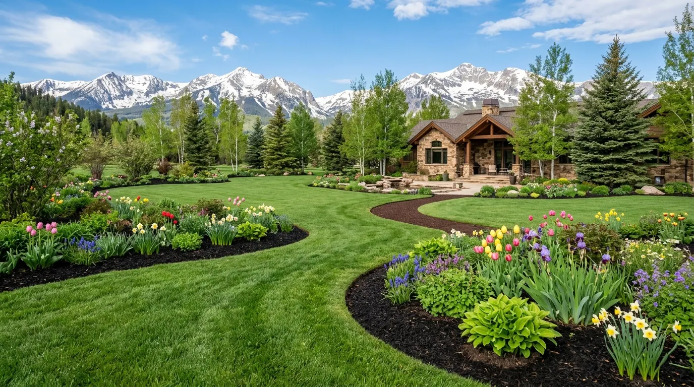
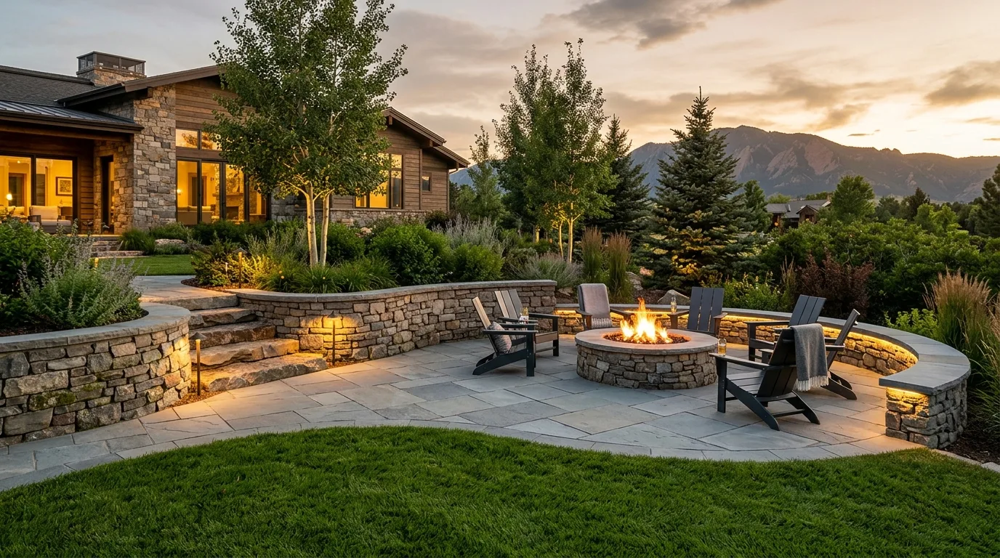
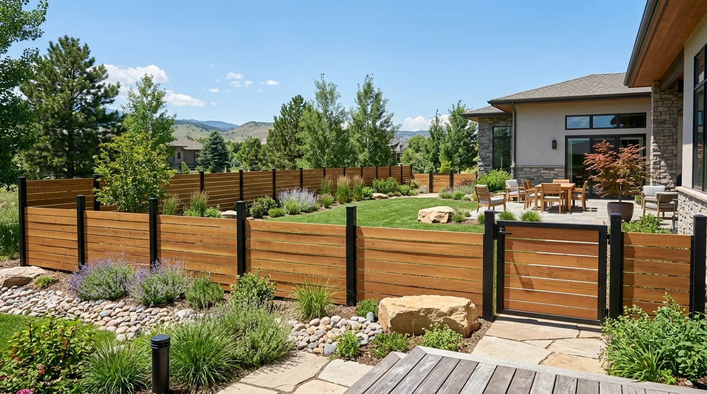
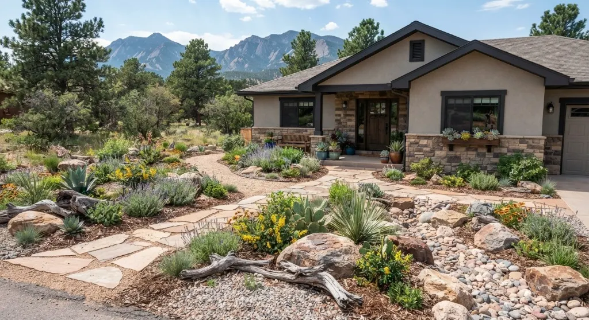
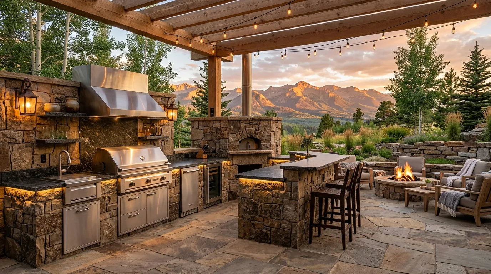

Spring Landscape Cleanup Checklist
Essential tasks to remove winter debris, assess plant health, and prepare your lawn and gardens for optimal growth throughout the growing season.
Expert tips, seasonal guides, and inspiration for your hardscaping, fencing, and lawn care projects in Longmont and Boulder County.

Essential tasks to remove winter debris, assess plant health, and prepare your lawn and gardens for optimal growth throughout the growing season.

A comprehensive guide to selecting durable, beautiful patio materials that withstand our freeze-thaw cycles and intense sun exposure.

Learn how to properly maintain and protect your cedar or redwood fence to ensure it lasts decades in our challenging climate.

Discover beautiful, low-water alternatives to traditional grass that thrive in our semi-arid climate while reducing maintenance and costs.

From layout and appliances to materials and workflow, learn how to create an outdoor cooking space that's both functional and beautiful.